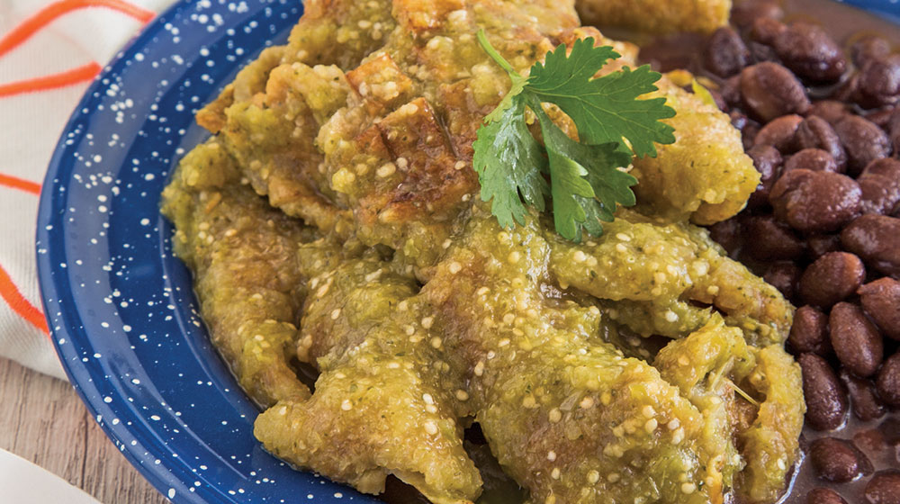

PLATILLOS FUERTES
Chicharrón

Espectativa
Ingredientes:
- 1/2 kg de tomates verdes
- 1/4 de cebolla
- 1 diente de ajo
- 1 ramita de cilantro
- 1/4 de taza de agua
- 350 g de chicharrón
- 2 tazas de frijoles cocidos
- Sal
Pasos:
- Licúa el tomate con el ajo, la cebolla y el cilantro; agrega poco a poco el agua para que cuides que no quede muy aguada la consistencia.
- Calienta la salsa hasta que hierva. Cuando lo haga, añade el chicharrón troceado y continúa calentando por 20 minutos más. Sazona con sal al gusto.
- Sirve con los frijoles y decora con una hoja de cilantro.


Este es un sitio de recetas rápidas que puedes hacer facilmente para una reunión, sorpresa, algo casual o simplemente para ti.